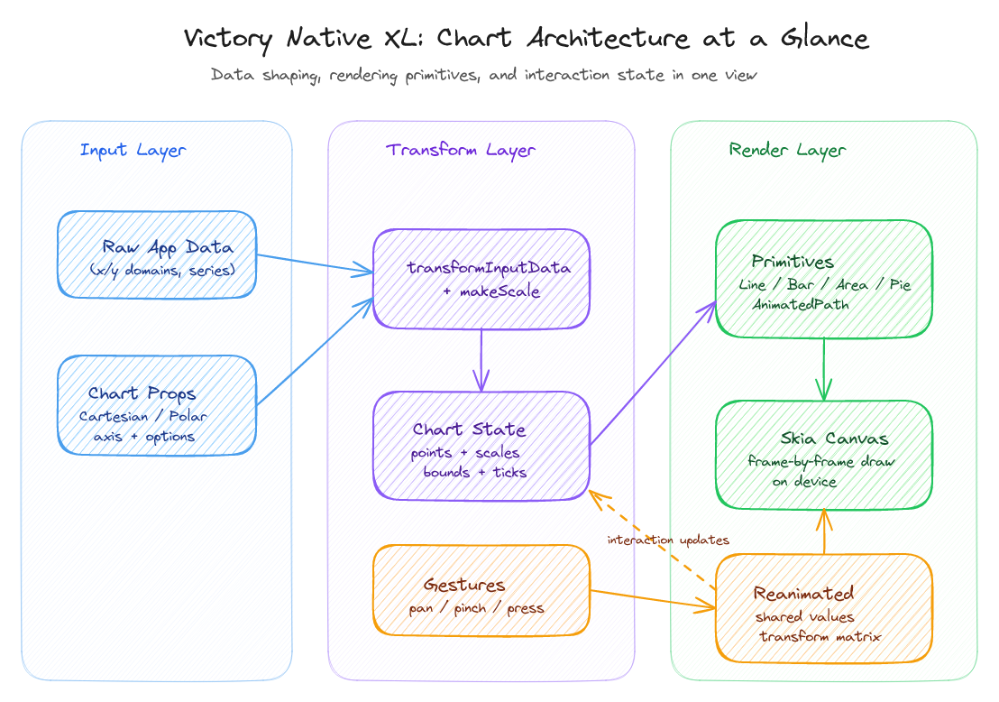
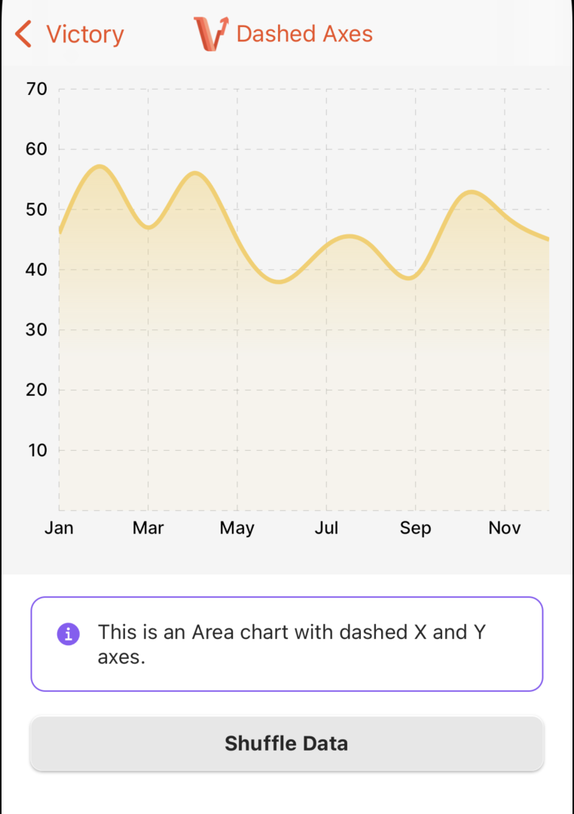
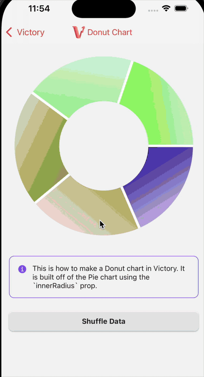

Building Charts in Victory Native XL
20/02/2026
Helping out with chart feature work and OSS maintenance in Victory Native XL.

I've worked on victory-native-xl for a while now, but have recently more-or-less paused my involvement just due to time constraints. It is a great open source charting project with a real user base (around 1.1k stars and roughly 180k weekly downloads on npm). My appreciation goes to the foundational creators and all contributors for helping it along its way so far!
Chart architecture at a glance
This is the simplified model I keep in my head while working in the codebase: data and props enter the chart container, transform and scale logic normalize it into chart state, rendering primitives draw to Skia, and gesture/reanimated state feeds interaction updates back into the loop.
Two chart examples from the example app
These are two of a couple of concrete chart patterns I helped ship in Victory Native XL: a dashed-axis area chart (with nice gradients!) and a donut-style pie chart configuration (the gif is a bit artifacty), (among others).


What I actually worked on
A big part of my work was supporting different chart styles and improving the implementation details around them so they are flexible without being fragile. The goal was always to keep the API usable while making behavior predictable for real workloads and trying to maintain compatibility with the existing API.
That means thinking beyond visuals too. The finishing work is usually in interaction behavior, data-shape tolerance, and clear defaults, docs and examples.
Maintenance is part of the job
I also spent a lot of time on maintenance: triaging issues, upgrading dependencies as the react native ecosystem evolves, reproducing bugs, reviewing and responding to pull requests, and following through on edge-case reports. This is less visible than feature work, but it is a big part of keeping the library pleasant to use.
In practice, that maintenance loop shortens time-to-clarity when something breaks, reduces duplicate confusion across issues, and increases the capacity for fixes and improvements.
A few lessons from maintaining OSS
1. Reproducible issues are the easiest to solve. The best issues defined expected behavior first, provided examples to reproduce the issue, and then discussed implementation.
2. Review quality compounds. Consistent PR feedback usually leads to better follow-on contributions from the community.
3. Backward compatibility is a feature. Preserving stable behavior across releases often matters as much as shipping new chart capabilities.
4. It's not going to be perfect. There's always open issues, bugs, uncertainty about some PRs, not enough time etc. I think accepting that partially in this context helps at least to keep shipping. After all, everyone is always welcome to open a PR, help with an issue, etc.
This was fun
I like building practical things people use in OSS. Working on victory-native-xl has been a nice mix of shipping chart improvements and doing the quieter maintenance work that keeps the project moving.
If you want to check out the package directly, it is on npm.